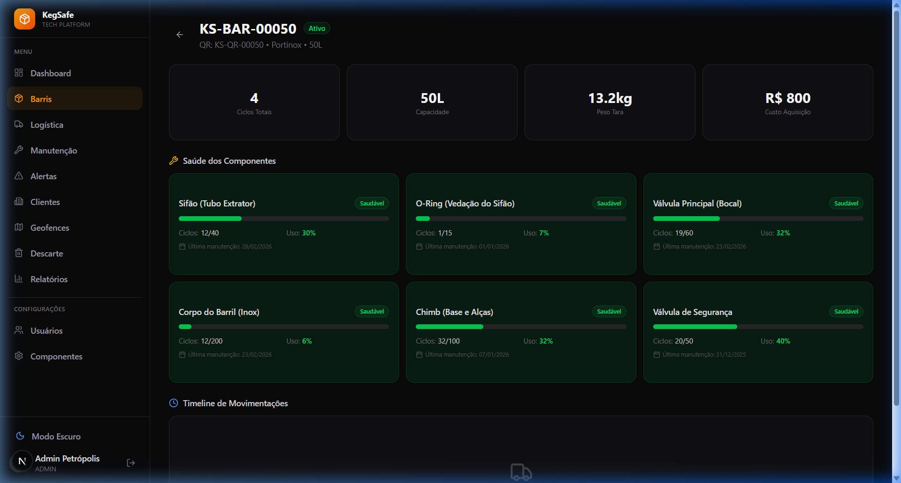
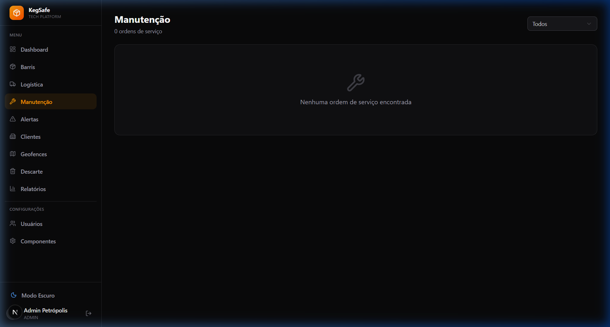
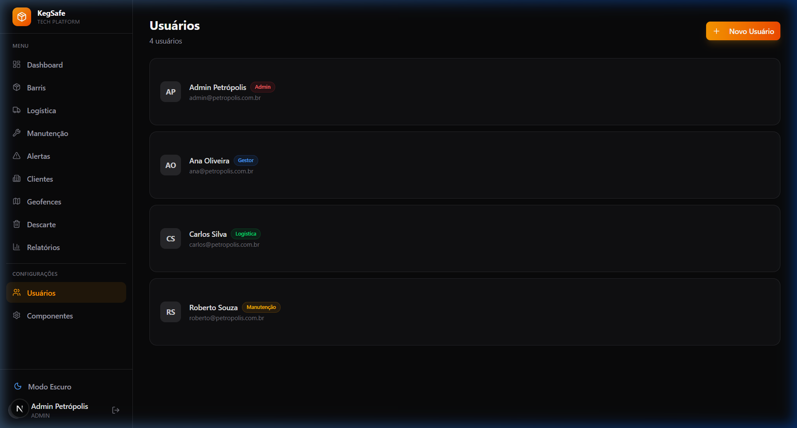
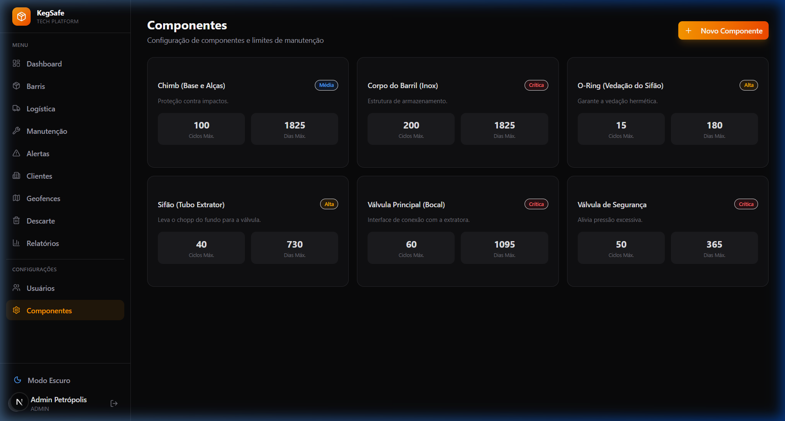

Como fazer login
Acesse o sistema — Abra o navegador e vá para o endereço do KegSafe Tech.
Digite seu email — Insira o email cadastrado pelo administrador.
Digite sua senha — Insira a senha fornecida.
Clique em "Entrar" — Você será redirecionado ao Dashboard.
Perfis de Acesso
| Perfil | Descrição | Acesso |
|---|
| ADMIN | Administrador do sistema | Todos os módulos + configurações |
| MANAGER | Gestor operacional | Dashboard, barris, alertas, manutenção, clientes, relatórios |
| LOGISTICS | Operador logístico | Barris, logística |
| MAINTENANCE | Técnico de manutenção | Barris, manutenção |
📦
Total de Barris
Quantidade total de barris cadastrados e quantos estão disponíveis para uso.
💰
Custo por Litro
Custo médio de transporte por litro, calculado com base nos custos logísticos.
🔄
Giro Médio
Número médio de ciclos completos (ida e volta) por barril.
⚠️
Alertas Ativos
Total de alertas pendentes, com destaque para os de criticidade alta.
Gráficos
Distribuição da Frota — Gráfico de rosca mostrando quantos barris estão em cada status (Ativo, Em Trânsito, No Cliente, Manutenção, Bloqueado, Perdido).
Saúde dos Componentes — Gráfico de barras horizontais mostrando quantos componentes estão Verde (saudável), Amarelo (atenção) ou Vermelho (crítico).
Funcionalidades
Busca por código — Procure barris pelo código interno (ex: KS-BAR-00001) usando o campo de pesquisa.
Filtro por status — Filtre barris por status: Ativo, Em Trânsito, No Cliente, Manutenção, etc.
Novo Barril — Clique no botão "Novo Barril" para abrir o formulário de cadastro com campos para fabricante, modelo da válvula, capacidade, peso, material e custo.
Acessar detalhes — Clique no código interno (link laranja) para acessar a página de detalhes do barril.
Status dos Barris
| Status | Descrição |
|---|
| Ativo | Barril disponível na fábrica para uso |
| Em Trânsito | Barril expedido, a caminho do destino |
| No Cliente | Barril entregue e em uso no ponto de venda |
| Manutenção | Barril em processo de manutenção preventiva ou corretiva |
| Bloqueado | Barril bloqueado — necessita triagem ou manutenção obrigatória |
| Descartado | Barril retirado de operação permanentemente |
| Perdido | Barril sem atividade por 60+ dias, marcado automaticamente |
Semáforo de Saúde
Cada barril possui um indicador de saúde baseado no componente em pior estado:
| Cor | Significado |
|---|
| ● Verde | Todos componentes saudáveis (< 80% do limite) |
| ● Amarelo | Ao menos 1 componente entre 80% e 100% do limite |
| ● Vermelho | Ao menos 1 componente excedeu o limite — manutenção obrigatória |
localhost:3000/barrels/[id]

Informações Exibidas
🔄
Ciclos Totais
Número de ciclos completos de uso do barril (ida ao cliente e volta à fábrica).
📏
Capacidade
Volume do barril em litros (ex: 30L, 50L).
⚖️
Peso Tara
Peso do barril vazio em quilogramas.
💲
Custo de Aquisição
Valor pago na compra do barril, em reais.
Saúde dos Componentes
Cada barril possui 6 componentes monitorados individualmente. O sistema calcula a saúde como MAX(% de ciclos usados, % de dias de uso) desde a última manutenção:
| Componente | Criticidade | O que faz |
|---|
| Sifão (Spear) | Crítico | Tubo interno de extração do líquido |
| O-Ring | Alta | Anel de vedação da válvula |
| Válvula Principal | Crítica | Mecanismo de abertura/fechamento para envase |
| Corpo do Barril | Alta | Estrutura física do barril (inox/polietileno) |
| Chimb (Neck Ring) | Média | Anel superior para encaixe da válvula |
| Válvula de Segurança | Crítica | Válvula de alívio de pressão |
💡
Cada card de componente mostra uma barra de progresso com o percentual de uso, ciclos realizados vs. limite máximo, e a data da última manutenção.
Timeline de Movimentações
Histórico cronológico de todos os eventos do barril: expedição, entrega, coleta, recepção e manutenções.
Fluxo Logístico
Expedição — Barril sai da fábrica. O sistema verifica se há componentes críticos antes de permitir a expedição.
Entrega — Barril chega ao cliente. Registra GPS e associa ao ponto de venda.
Coleta — Barril é retirado do cliente para retorno à fábrica.
Recepção — Barril retorna à fábrica. Incrementa ciclo, recalcula saúde dos componentes e gera alertas se necessário.
⚠️
Bloqueio na Expedição: Barris com componentes em estado VERMELHO não podem ser expedidos. O sistema exibirá um alerta e bloqueará a operação até que a manutenção seja realizada.
localhost:3000/maintenance

Funcionalidades
🔧
Ordens de Manutenção
Criação e acompanhamento de ordens de manutenção com status (Pendente, Em Progresso, Concluída).
✅
Checklist de Componentes
Registro detalhado da manutenção de cada componente, com reset dos ciclos e atualização de custos.
🔍
Triagem
Verificação de integridade: barril intacto, com dano reparável, ou bloqueio por dano irreparável.
Tipos de Alerta
| Tipo | Frequência | Descrição |
|---|
| Saúde do Componente | Diário 06:00 | Componente atingiu 80%+ do limite de uso |
| Barril Ocioso | Diário 08:00 | Barril parado no cliente por 15+ dias |
| Manutenção Atrasada | Diário 07:00 | Ordem de manutenção pendente há 7+ dias |
| Barril Perdido | Diário 09:00 | Sem atividade por 60+ dias — status muda para LOST |
| Violação de Geofence | A cada hora | Entrega fora da zona geográfica esperada |
| GPS Offline | A cada 6h | Sem sinal GPS por 48+ horas (Fase 2) |
| Cache Refresh | A cada 5 min | Atualização de cache para dashboard (Fase 2) |
Ações
Reconhecer — Marca o alerta como visto, sem resolvê-lo.
Resolver — Marca o alerta como tratado. Alertas de componentes são automaticamente resolvidos quando a manutenção é concluída.
Cadastro de Cliente
Clique em "Novo Cliente" para abrir o formulário com os campos:
| Campo | Descrição | Obrigatório |
|---|
| Razão Social | Nome jurídico da empresa | Sim |
| Nome Fantasia | Nome comercial | Sim |
| CNPJ | 14 dígitos, validação automática | Sim |
| Telefone | Contato do cliente | Não |
| Email | Email do cliente | Não |
| Endereço | Endereço completo | Não |
| Latitude / Longitude | Coordenadas GPS para criar geofence automática | Não |
✅
Ao cadastrar um cliente com coordenadas GPS, o sistema cria automaticamente uma geofence do tipo CLIENT para monitorar entregas naquele local.
Tipos de Zona
| Tipo | Uso |
|---|
| Fábrica | Zona da sede/fábrica — barris devem retornar aqui |
| Armazém | Centros de distribuição ou depósitos |
| Cliente | Zona do ponto de venda — entregas devem estar dentro do raio |
Cada geofence possui nome, coordenadas (lat/lng) e raio em metros. O sistema utiliza o algoritmo de Haversine para calcular a distância entre o ponto de entrega e o centro da geofence.
Fluxo de Descarte
Sugestão — O sistema lista barris candidatos a descarte (componentes excessivamente gastos, custo de manutenção elevado).
Criação — Técnico cria ordem de descarte com justificativa.
Aprovação (MANAGER) — Gestor revisa e aprova ou rejeita.
Execução (ADMIN) — Administrador finaliza o descarte. Status do barril muda para DISPOSED.
Relatórios Disponíveis
📊
Saúde da Frota
Distribuição dos barris por status e saúde dos componentes.
💵
Custo por Litro
Evolução do custo operacional por litro transportado.
📈
Giro de Ativos
Frequência de uso e rotatividade da frota.
📉
Relatório de Perdas
Barris perdidos, bloqueados e descartados com impacto financeiro.
localhost:3000/settings/users

Cadastro de Usuário
Clique em "Novo Usuário" para criar uma conta. Campos obrigatórios:
| Campo | Descrição |
|---|
| Nome Completo | Nome do colaborador |
| Email | Email corporativo (será usado como login) |
| Senha | Mínimo 6 caracteres |
| Perfil | Admin, Gestor, Logística ou Manutenção |
⚠️
Proteção de último admin: O sistema impede a remoção ou alteração de perfil do último administrador ativo, garantindo que sempre haja ao menos 1 admin.
localhost:3000/settings/components

Parâmetros de Cada Componente
| Parâmetro | Descrição |
|---|
| Max Ciclos | Número máximo de ciclos antes de manutenção obrigatória |
| Max Dias | Número máximo de dias desde a última manutenção |
| Criticidade | LOW, MEDIUM, HIGH ou CRITICAL — define a prioridade dos alertas |
💡
Cálculo da saúde: healthPercentage = MAX(ciclosUsados / maxCiclos × 100, diasUsados / maxDias × 100). Quando atinge 80%, passa para AMARELO. Acima de 100%, fica VERMELHO.